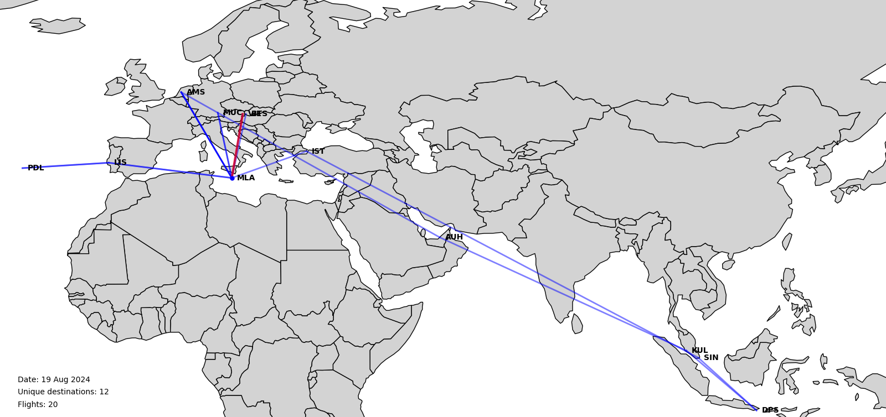

Flightvisualizer.com Visit site →
🔍 Overview
Flightvisualizer started as a personal project with a clear objective: I wanted to visualize my frequent flights on a global map, calculate the total distance traveled in kilometers, and estimate the CO2 emissions to easily offset them.
The development process began with Python-based visualization before expanding to a more comprehensive solution:
- Collected a comprehensive dataset of all airports worldwide with their coordinates
- Created initial flight path visualizations using Python's data visualization libraries
- Developed algorithms to calculate distances and estimate carbon emissions

One of the first visualization outcomes showing flight paths on a global map
✨ Key Features
- Visualization of personal flight history on an interactive global map
- Calculation of total distance traveled in kilometers
- Estimation of CO2 emissions for carbon offsetting
- Support for importing flight data from various sources
- Historical view of all past flights with statistics
- Ability to know and offset your carbon footprint
🛠️ Technical Implementation
The project began as a Python-based data visualization tool using libraries like Matplotlib, Pandas, and GeoPy. The initial implementation focused on:
- Processing and cleaning airport coordinate data
- Plotting flight paths on a world map using great circle arcs
- Calculating distances between airports using the haversine formula
- Estimating carbon emissions based on flight distance and aircraft type
The front-end implementation is still in development, with plans to create an interactive web interface that allows users to:
- Upload their flight history from various sources
- Visualize flights with interactive controls
- Generate reports on travel statistics and environmental impact
- Connect with carbon offsetting services
🚧 Current Status
The project is currently in the prototype phase with a working Python backend for data processing and visualization. The web interface is under development, with plans to release a beta version in the coming months.
Future development will focus on:
- Creating a user-friendly web interface
- Adding support for automatic flight data import from email confirmations
- Implementing more accurate carbon emission calculations
- Adding integration with popular carbon offsetting services